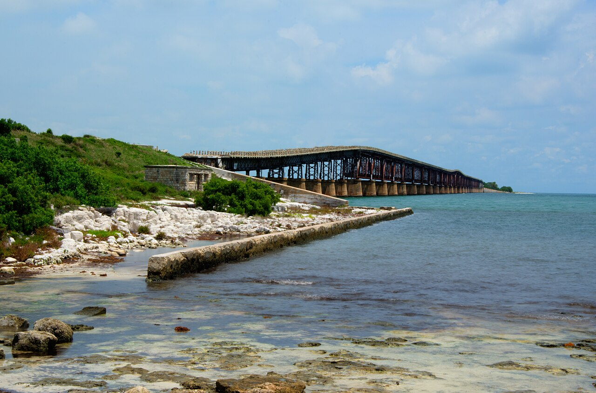
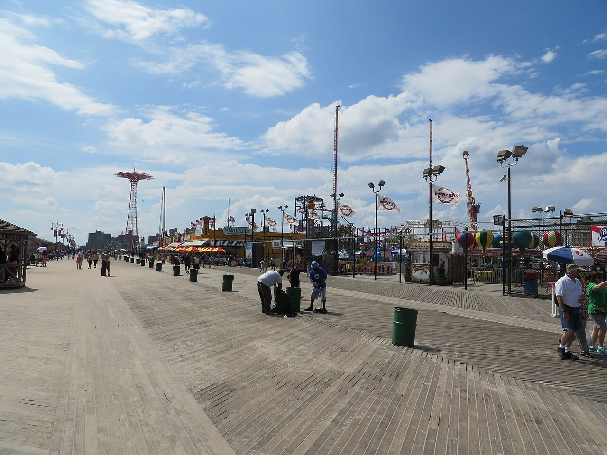
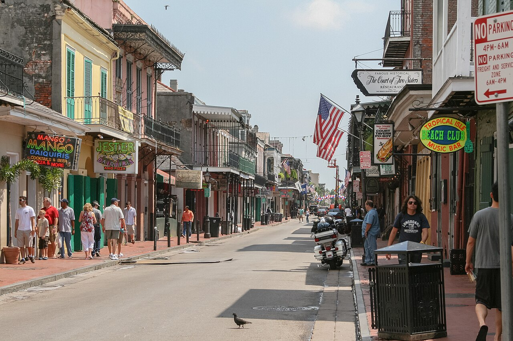

Miami, Florida
Vice City
Coastal towers, causeways, and a skyline built for sunset. The clearest real-world echo of Leonida's main stage.
Photo: Averette (CC BY 3.0) · source
See the Vice City map · Grand Theft Auto VI story and characters
Game signal
Each signal changes the site theme. Content pages keep their own game theme until you choose another.
Vice City is Miami. Liberty City is New York. Los Santos is Los Angeles. This page pairs each fictional GTA location with the real city that inspired it, with photos, notes, and links to the matching map. These are real-world photographs, not game artwork.
Browse the GTA map atlas Open the interactive comparison map
Miami, Florida
Coastal towers, causeways, and a skyline built for sunset. The clearest real-world echo of Leonida's main stage.
Photo: Averette (CC BY 3.0) · source
See the Vice City map · Grand Theft Auto VI story and characters

Florida Keys
A chain of islands linked by long roads and longer water views. Great inspiration for a map that ends in causeways.
Photo: EdoDodo (CC BY-SA 3.0) · source
See the Leonida Keys map · Grand Theft Auto VI story and characters

New York City
Density, weather, and a transit system that shapes the day. Liberty City borrows the attitude more than the exact street grid.
Photo: Martin Dürrschnabel (Public domain) · source
See the Liberty City map · Grand Theft Auto IV story and characters

Coney Island, Brooklyn
Boardwalk, amusement lights, and the long train home. The film and game turn a real edge-of-the-city place into a starting line.
Photo: Leonard J. DeFrancisci (CC BY-SA 4.0) · source
See the Coney Island (The Warriors) map · The Warriors story and characters

Los Angeles, California
Freeway sprawl, entertainment industry satire, and hills that turn a skyline into a status symbol.
Photo: Levi Clancy (CC BY-SA 4.0) · source
See the Los Santos map · Grand Theft Auto V story and characters

San Francisco, California
Steep streets, bridges, and a compact urban core. San Fierro takes the silhouette and runs with it.
Photo: Brocken Inaglory (CC BY-SA 3.0) · source
See the San Fierro map · Grand Theft Auto: San Andreas story and characters

Las Vegas, Nevada
Neon, casinos, and desert heat. A natural fit for a map that treats nightlife as infrastructure.
Photo: Clément Bardot (CC BY-SA 3.0) · source
See the Las Venturas map · Grand Theft Auto: San Andreas story and characters

New Orleans, Louisiana
River city, old streets, and humid air. Saint Denis is the frontier's idea of a metropolis arriving early.
Photo: Diego Delso (CC BY-SA 3.0) · source
See the Saint Denis map · Red Dead Redemption II story and characters

London, England
The early expansion traded American crime for period London: tight streets, British cars, and a very different soundtrack.
Photo: Diliff (CC BY-SA 3.0) · source
See the GTA London 1969 map · Grand Theft Auto: Vice City story and characters

New England college towns
Old brick, prep schools, and small-town hierarchy. Bullworth compresses that atmosphere into a single campus.
Photo: King of Hearts (CC BY-SA 4.0) · source
Fan-made comparisons for commentary and context. Photos are credited to their photographers and licences. Not affiliated with, endorsed by, or sponsored by Rockstar Games or Take-Two Interactive.